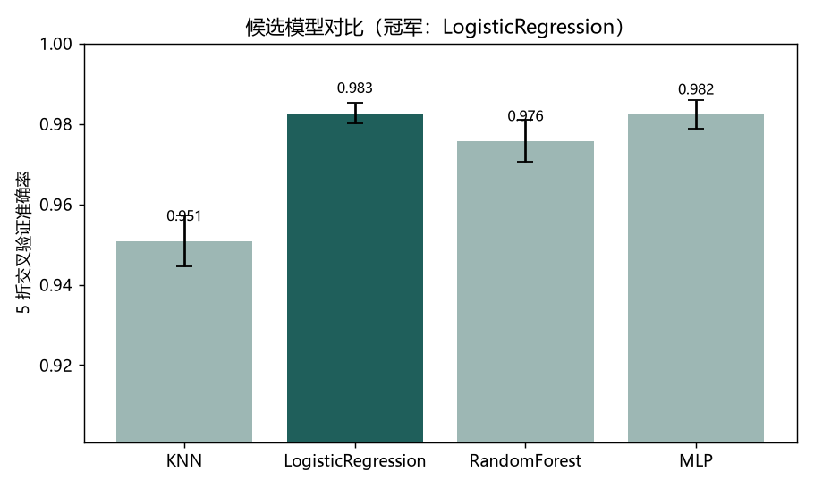

04 — PROJECTS
正在做的事。
按"先收拢已有、再攻方向核心"的顺序推进。状态诚实标注——在做的就是在做，规划的就是规划。

AutoBio × π0：VLA 基础模型 LoRA 微调
已完成 · 单任务复现在 AutoBio 机器人操作基准上修复上游代码，并对 VLA 基础模型 π0 做 LoRA 微调：单张 RTX 5090 训练 7.5 小时，thermal_cycler_close 任务从 zero-shot 0/6 提升到 18/20（90%）。训练曲线、逐回合结果与 rollout 视频全部公开，可复现。
Python · JAX · openpi · π0 · LoRA · MuJoCo
纯 PyTorch 手写 DQN 与 PPO，不借助现成 RL 库；同一份 PPO 迁移到 MuJoCo 物理仿真，InvertedPendulum 复测 20/20 满分。页面里可以亲手玩 CartPole，或看训练好的策略来玩。
PyTorch · Double-DQN · PPO · GAE · MuJoCo 查看项目 →
手写数字识别 · CNN
已完成PyTorch 手写小 CNN，真实 MNIST 训练到 98.9%。权重导出到浏览器：画一个数字，抬笔即识别——推理就在你本地跑。
Python · PyTorch · CNN · MNIST 查看项目 →个人知识 RAG 助手
在线可答把两年自学笔记整理成 35 段语料，做自然语言问答：向量语义检索找到最相关的几段笔记，再由 DeepSeek 组织成回答。语料都是我真实学过的，问出来的也是真的。
Vanilla JS · bge-m3 · 向量检索 · DeepSeek 查看项目 →
端到端机器学习 Pipeline
学习中UCI 手机 IMU 人体活动识别（561 维特征、6 类姿态）完整流程：数据清洗 → 特征工程 → Pipeline → 交叉验证选模 → 调参 → 评估可视化 → Streamlit demo。
Python · Scikit-learn · Pandas · Streamlit 查看项目 →
LeRobot 行为克隆复现
进行中PD 专家示教采集轨迹，MLP 拟合专家动作——把「学策略」变成监督模仿。验证集动作预测 99.6%，也如实记录了分布漂移这一 BC 的核心难点。
PyTorch · Behavior Cloning · Imitation Learning 查看项目 →

动手学深度学习 · 第一章实践
学习中线性回归（手写 SGD）、Softmax 回归、多层感知机各从零实现一遍；配一个可拖动的「欠拟合 / 过拟合」演示，实时看偏差-方差怎么此消彼长。
Python · PyTorch · NumPy · 从零实现 查看项目 →